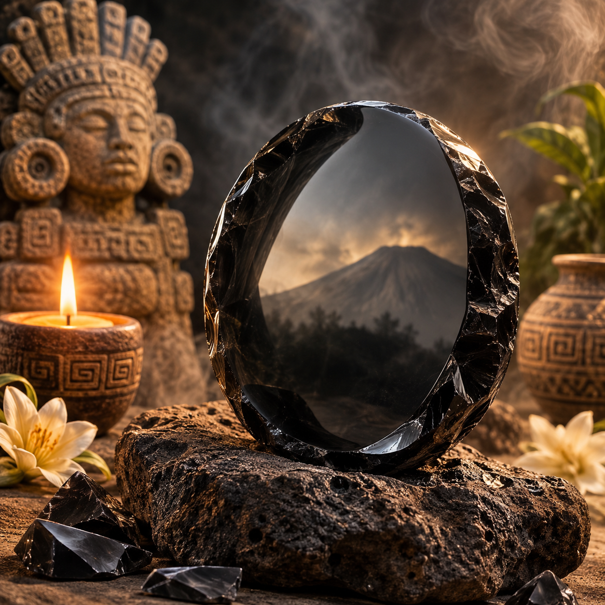

La obsidiana: ¿espejo predictivo?

¿Puede una piedra guardar secretos? ¿Es posible que algunos objetos conserven algo de la historia, la energía o las experiencias de quienes han estado en contacto con ellos?
La obsidiana, roca ígnea volcánica, es un vidrio natural que se forma por el enfriamiento rápido de la lava rica en sílice. Nace del fuego en las entrañas de la Tierra y el enfriamiento acelerado impide la cristalización de los minerales, conservando la composición química característica de la lava original. Desde una mirada esotérica, este proceso podría interpretarse como la conservación de su energía en su interior.
Su superficie oscura, capaz de reflejar imágenes cuando está pulida, ha despertado fascinación desde tiempos antiguos. En diversas tradiciones se le han atribuido propiedades simbólicas, protectoras y adivinatorias. Se dice que es una piedra de vibración intensa y honesta, asociada con la protección psíquica, la absorción de energías densas y la posibilidad de mirar más allá de lo evidente.
La obsidiana y el mundo invisible:"Mitologia"
Según la mitologia azteca la obsidiana a sido usada como espejo de adivinación y clarividencia creyendo que revelaba el futuro y el estado del alma.
Es considerada una de las piedras con vibración más intensa y honesta, se dice que sirve como amuleto psiquico absorviendo energías densas del entorno y bloqueando ataques energéticos.
La predicción
Las culturas prehispánicas de Mesoamérica, especialmente los teotihuacanos, mayas y aztecas la consideraban un objeto con con alma y poder divino, entre los objetos curiosos esta el "El espejo de Tezcatlipoca".
Tezcatlipoca era el dios azteca del cielo nocturno y la memoria, el llevaba un espejo de obsidiana pulida. Los sacerdotes utilizaban estos espejos negros para la adivinación y la clarividencia, creyendo que revelaban el futuro y el verdadero estado del alma.
Se dice que pocos años antes de la llegada de los españoles el emperador Moctezuma pudo ver en un espejo de Obsidiana encrustrado en la coronilla de un ave, una llanura donde avanzaba una multitud de hombres armados, montados sobre animales parecidos a ciervos sin cuernos (caballos), que venían marchando en son de guerra, lo que luego fue asociado con la llegada de los españoles. Predicción?
Memoria energetica?
Curiosamente años después el mismo espejo utilizado por el Dios Tezcatlipoca llego a manos del mago Europeo Jhon Dee (1527-1608), matemático, astrólogo y estudioso de las ciencias ocultas de la corte de Isabel I de Inglaterra. quién terminó dandole al objeto el mismo uso que le daban los aztecas, como objeto de adivinación y como portal a otra dimensión, sin conocer la historia del mismo.
Es acaso esta una prueba de la memoria que guardan los objetos? más especificamente la piedra de obsidiana? y de como energeticamente puede trasferir la información a quien los posee???
Explora las historias detrás de los espejos de obsidiana
El espejo de Moctezuma y los presagios
Una leyenda relata que, años antes de la llegada de los españoles, Moctezuma habría observado en un espejo —en algunas versiones, colocado en la coronilla de un ave— una escena de una llanura donde avanzaban numerosos hombres armados, montados sobre animales que no conocía, semejantes a ciervos sin cuernos: caballos.
La imagen se ha interpretado posteriormente como un presagio de la llegada de los conquistadores. La historia forma parte de relatos sobre señales y acontecimientos que rodearon la conquista, aunque las versiones y su interpretación histórica varían y no deben tomarse como evidencia de una predicción comprobada.
¿Fue una visión, una reinterpretación posterior o una historia que fue adquiriendo significado con el paso del tiempo? El relato sigue formando parte del imaginario asociado a los espejos y los presagios.
El espejo de obsidiana de John Dee
John Dee (1527–1608/1609) fue un matemático, astrólogo, estudioso de las ciencias ocultas y consejero en la corte de Isabel I de Inglaterra. Se le conoce también por sus exploraciones de prácticas de comunicación espiritual y adivinación, algunas realizadas junto a Edward Kelley.
Entre los objetos asociados a Dee se encuentra un espejo de obsidiana de origen mexicano, hoy conservado en el British Museum. Se ha relacionado su procedencia con México y con el mundo mesoamericano, pero no existe fundamento para afirmar que fuera exactamente el mismo espejo de Tezcatlipoca o que hubiera pertenecido a sus sacerdotes.
La historia de este objeto, que cruzó océanos y terminó en manos de un estudioso europeo interesado en la adivinación, alimenta la fascinación por la obsidiana y por los significados que distintas culturas atribuyeron a los espejos.
¿Guardan memoria los objetos?
La historia de estos espejos abre una pregunta que va más allá de su material o de su procedencia: ¿pueden los objetos conservar algo de quienes los han usado?
Desde una perspectiva espiritual, algunas personas creen que los objetos acumulan energía, emociones o huellas de las experiencias que han vivido. Otras encuentran en ellos un valor simbólico, histórico o emocional: una pieza puede recordarnos a alguien, una época o un acontecimiento y, de ese modo, adquirir un significado profundo.
Quizá la idea de que un objeto guarda memoria nos hable también de nuestra propia capacidad de atribuir significado, de conectar con relatos y de imaginar aquello que permanece oculto.
Un espejo, muchas preguntas
La obsidiana ha sido piedra, herramienta, objeto de intercambio, espejo y símbolo. Su origen volcánico nos recuerda la transformación de la materia; su superficie, la fascinación humana por aquello que devuelve una imagen y por lo que creemos encontrar más allá de ella.
Y ¿qué piensas tú? ¿Guardan memoria los objetos? ¿Puede predecirse el futuro o simplemente es la ilusión de la mente queriendo ver que es posible?
Alma de Jade — bienestar para ti, cuidado para el mundo.